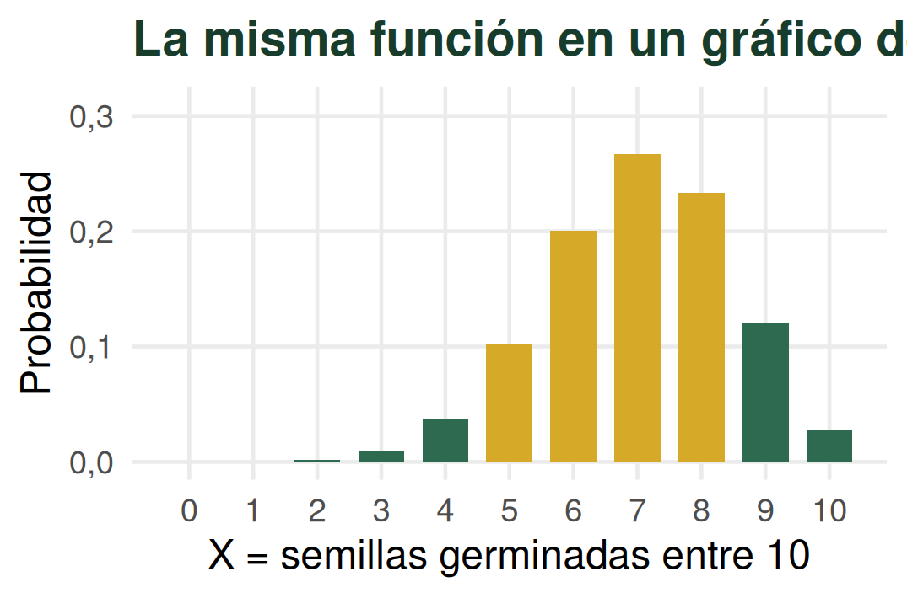
Distribuciones de probabilidad
Del resultado incierto a un patrón predecible
Andrés Tálamo
2 de septiembre de 2026
¿Dónde habíamos quedado?
Si cada semilla germina con probabilidad 0,70 y tomamos 10 semillas:
\(X\) = número de semillas germinadas entre 10
¿Podemos saber cuánto valdrá \(X\)?
No exactamente. Pero podemos saber qué valores son más probables.
Cada tanda puede dar un resultado diferente
Tanda 1 → X = 6
✓✓✓✓✓✓××××
Tanda 2 → X = 7
✓✓✓✓✓✓✓×××
Tanda 3 → X = 8
✓✓✓✓✓✓✓✓××
El valor de \(X\) cambia de una repetición a otra.
X es una variable aleatoria
Una variable aleatoria asigna un valor numérico al resultado de un experimento aleatorio.
\[X=\text{número de semillas germinadas entre 10}\] \[X\in\{0,1,2,\ldots,10\}\]
Repetir revela un patrón
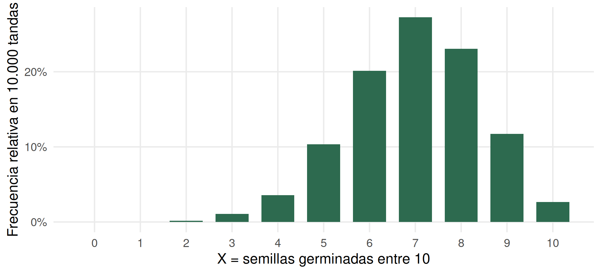
No predecimos una tanda particular, pero aparece un patrón estable.
Una distribución asocia valores y probabilidades
Una distribución de probabilidad indica qué valores puede tomar una variable aleatoria y qué probabilidad tiene cada uno.
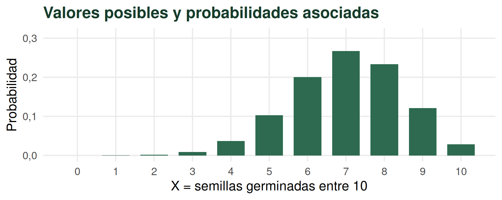
Distintos procesos requieren distintos modelos
Discretas
Bernoulli
Binomial
Poisson
Hipergeométrica
Continuas
Normal
t de Student
Chi-cuadrado
F
En esta clase
Bernoulli, Binomial, Poisson, Hipergeométrica y Normal.
Bernoulli, Binomial, Poisson, Hipergeométrica y Normal.
Más adelante
t, Chi-cuadrado y F aparecerán en Inferencia.
t, Chi-cuadrado y F aparecerán en Inferencia.
Una misma distribución puede tener formas diferentes
Los parámetros determinan las características concretas de la distribución y permiten calcular sus probabilidades.
\[Binomial(n,p)\]
Cambiar \(n\) o \(p\) cambia la distribución.
\[N(\mu,\sigma^2)\]
Cambiar \(\mu\) o \(\sigma\) cambia la distribución.
En una variable discreta, cada valor tiene probabilidad
\[f(x)=P(X=x)\]
| \(x\) | \(P(X=x)\) |
|---|---|
| 5 | 0,103 |
| 6 | 0,200 |
| 7 | 0,267 |
| 8 | 0,233 |
Las barras separadas representan valores individuales
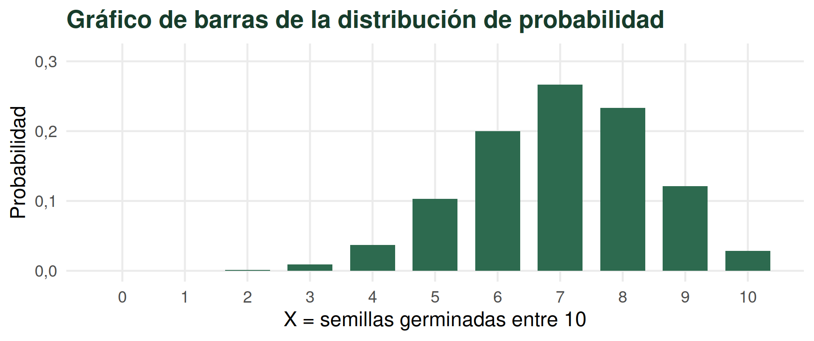
\(f(x)\ge0\)\(\displaystyle\sum_x f(x)=1\)
Una semilla puesta a germinar es un ensayo Bernoulli
GGermina
éxito → \(Y=1\)
\(P(Y=1)=p\)
éxito → \(Y=1\)
\(P(Y=1)=p\)
NNo germina
fracaso → \(Y=0\)
\(P(Y=0)=1-p\)
fracaso → \(Y=0\)
\(P(Y=0)=1-p\)
\[Y\sim Bernoulli(p)\]
Si repetimos el ensayo y contamos éxitos:
\[X=Y_1+Y_2+\cdots+Y_n\]
Si los ensayos son independientes y tienen la misma probabilidad \(p\):
\[X\sim Binomial(n,p)\]
Nuestro ejemplo principal sigue siendo de 10 semillas
\[n=10,\qquad p=0{,}70\]
En este problema llamamos éxito a que una semilla germine.
\[X=\text{número de semillas germinadas entre 10}\]
- número fijo de ensayos (n);
- dos resultados por ensayo: éxito y fracaso;
- misma probabilidad de éxito (p);
- ensayos independientes;
- \(X\) cuenta los éxitos en \(n\) ensayos independientes.
Simplifiquemos a 3 semillas para entender la fórmula
Para esta construcción solamente: \(n=3\), \(p=0{,}70\).
¿Cuál es la probabilidad de que germinen exactamente 2 de las 3 semillas? \[P(X=2)=?\]
Posible resultado 1:
GGN
Posible resultado 2:
GNG
Posible resultado 3:
NGG
Estas son todas las combinaciones posibles con 2 germinadas entre 3 semillas.
Primero calculamos una secuencia
Seguimos respondiendo: \(P(X=2)=?\)
Recuperamos la regla multiplicativa especial
para eventos independientes:
\[P(GGN)\] \[=P(G)\cdot P(G)\cdot P(N)\] \[=(0{,}70)(0{,}70)(0{,}30)\] \[=(0{,}70)^2(0{,}30)^1\]
Después contamos cuántas secuencias sirven
La pregunta sigue siendo: \(P(X=2)=?\)
\(GGN\), \(GNG\) y \(NGG\) son mutuamente excluyentes.
\[P(X=2)=3(0{,}70)^2(0{,}30)^1\] \[3={3\choose2}\]
La fórmula resume el mismo razonamiento, generalizado
\[P(X=x)={n\choose x}p^x(1-p)^{n-x}\]
\(p^x\)
los \(x\) éxitos
los \(x\) éxitos
\((1-p)^{n-x}\)
los fracasos
los fracasos
\({n\choose x}\)
formas de ubicar éxitos
formas de ubicar éxitos
\({n\choose x}=\dfrac{n!}{x!(n-x)!}\) — no desarrollamos combinatoria.
Volvemos a las 10 semillas
\[X=\text{número de semillas germinadas entre 10}\]
\[X\sim Binomial(10;0{,}70)\]
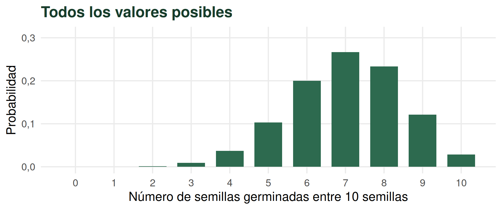
La tabla contiene la distribución completa
| x | P(X=x) |
|---|---|
| 0 | 0,0000 |
| 1 | 0,0001 |
| 2 | 0,0014 |
| 3 | 0,0090 |
| 4 | 0,0368 |
| 5 | 0,1029 |
| 6 | 0,2001 |
| 7 | 0,2668 |
| 8 | 0,2335 |
| 9 | 0,1211 |
| 10 | 0,0282 |
La suma de las 11 probabilidades es \(\displaystyle\sum_xP(X=x)=1\).
Tabla y gráfico contienen la misma información
Tabla
Cada fila asocia \(x\) con \(P(X=x)\).
Cada fila asocia \(x\) con \(P(X=x)\).
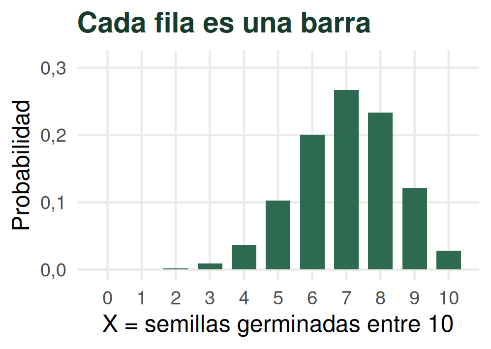
Son dos representaciones de la misma función de probabilidad.
Una probabilidad puntual es una barra
¿Cuál es la probabilidad de que si pongo a germinar 10 semillas germinen 7?
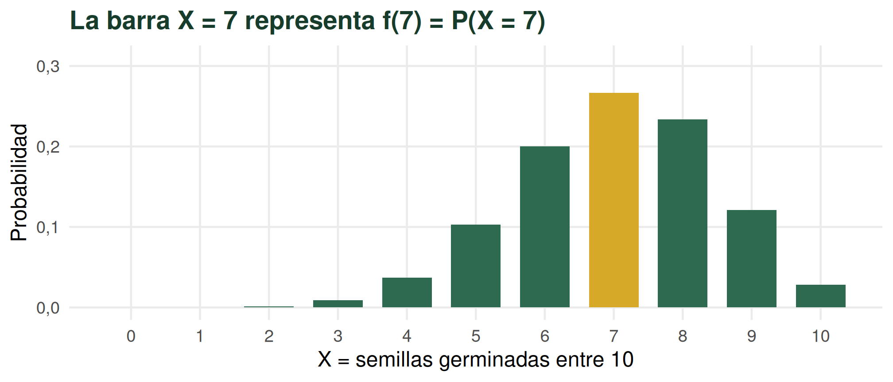
\(f(7)=P(X=7)=\) 0,267
¿Qué probabilidad hay de que germinen 7 o menos?
¿Como máximo 7? \(P(X\le7)\)
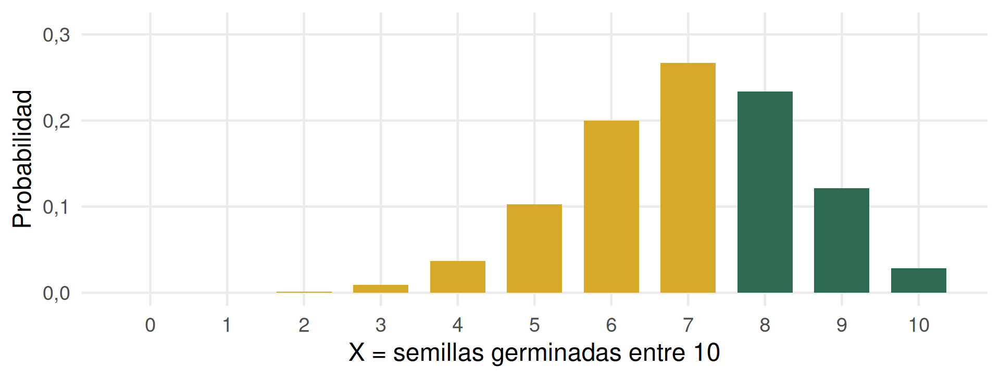
pbinom(7, size = 10, prob = 0.70) = 0,617
¿Qué probabilidad hay de que germinen 7 o más?
¿Al menos 7? \(P(X\ge7)\)
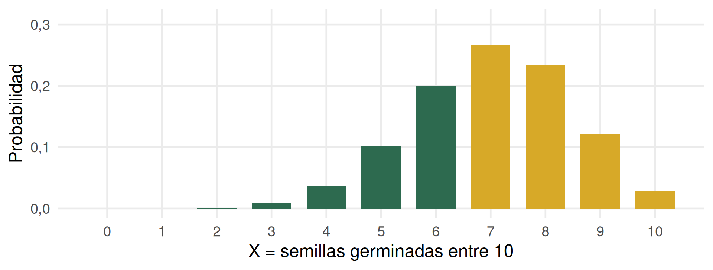
1 - pbinom(6, size = 10, prob = 0.70) = 0,650
En una discreta, \(<\) no es lo mismo que \(\le\)
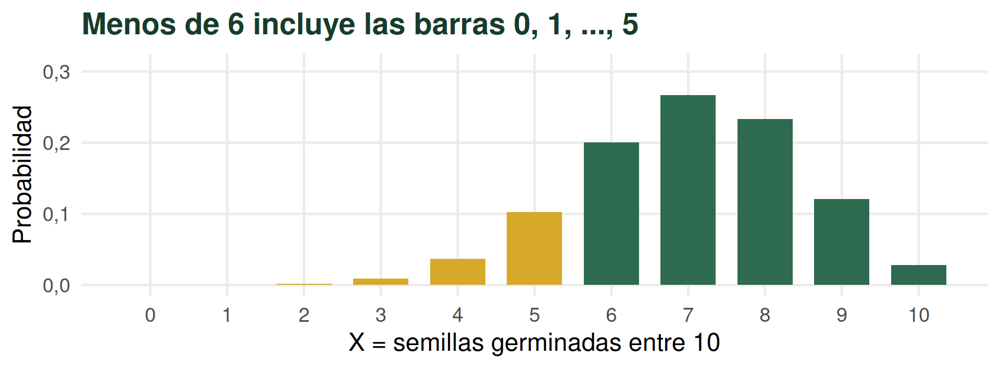
\(X<6 = X\le5\)
“Menos de 6”, “como máximo 5” y “hasta 5 inclusive” expresan \(P(X<6)=P(X\le5)\).
Incluir una barra puede cambiar la probabilidad
\[P(X<6)=P(X\le5)\neq P(X\le6)\]
Cada valor individual de una variable discreta puede tener probabilidad positiva.
¿Entre 5 y 8 germinadas?
\[P(5\le X\le8)\]
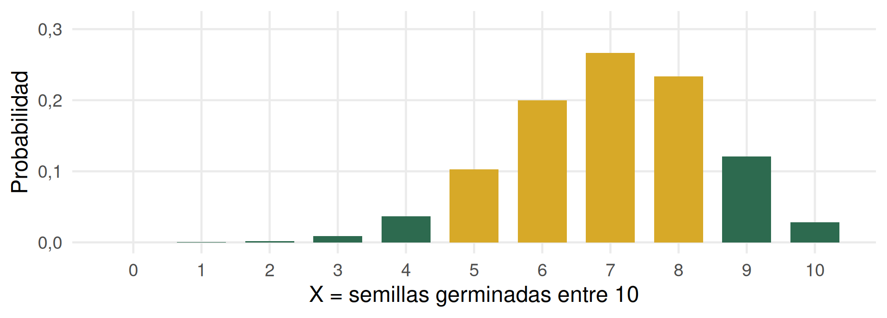
\(P(X\le8)-P(X\le4)=\) 0,803
La distribución Binomial tiene centro y dispersión
Valor esperado
\(E(X)=np=7\)
Varianza
\(Var(X)=np(1-p)=2{,}1\)
Desvío estándar
\(SD(X)=\sqrt{np(1-p)}\approx1{,}45\)
El valor esperado es la media de \(X\) si repitiéramos muchísimas veces el mismo experimento.
Si repitiéramos muchas tandas de 10 semillas, el número medio de germinadas tendería a 7 por tanda.
Esto no significa que en cada tanda germinen exactamente 7.
¿Qué hacen n y p con la distribución?
E(X) = 7,00DE(X) = 1,45
Cambiamos un parámetro y cambia la distribución
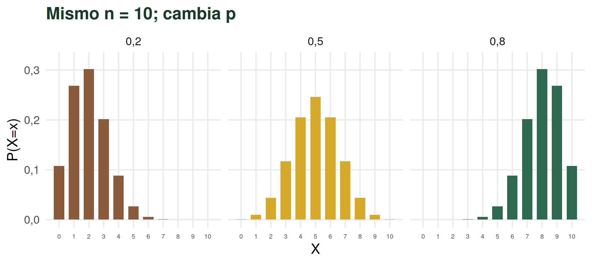
Características de la distribución Binomial
¿Variable?
Número de éxitos en \(n\) ensayos independientes.
Número de éxitos en \(n\) ensayos independientes.
Modelo
\(X\sim Binomial(n,p)\)
\(X\sim Binomial(n,p)\)
Parámetros y valores
\(n,\ p\)
\(X=0,1,\ldots,n\)
\(n,\ p\)
\(X=0,1,\ldots,n\)
Condiciones
\(n\) fijo · dos resultados · \(p\) constante · independencia
\(n\) fijo · dos resultados · \(p\) constante · independencia
Media
\(E(X)=np\)
\(E(X)=np\)
Varianza y DE
\(Var(X)=np(1-p)\)
\(SD(X)=\sqrt{np(1-p)}\)
\(Var(X)=np(1-p)\)
\(SD(X)=\sqrt{np(1-p)}\)
No todo conteo es Binomial
¿Cuántas plantas de una maleza encontramos en una parcela de 1 m²?
- no hay un número fijo previo de ensayos;
- no observamos una secuencia natural de éxito/fracaso;
- contamos ocurrencias dentro de una unidad definida.
Este proceso no es naturalmente Binomial.
La distribución Poisson modela ocurrencias por unidad
\[X=\text{número de ocurrencias (conteo) en una unidad determinada}\]
\[X\sim Poisson(\lambda)\]
\[P(X=x)=\frac{e^{-\lambda}\lambda^x}{x!},\qquad x=0,1,2,\ldots\]
\(\lambda\) representa el número medio de ocurrencias en la unidad considerada.
La unidad de observación forma parte del modelo
1 m²
4 plantas en promedio
\(\lambda=4\)
4 plantas en promedio
\(\lambda=4\)
→
3 m²
12 plantas en promedio
\(\lambda=12\)
12 plantas en promedio
\(\lambda=12\)
La tasa se multiplica por la superficie si suponemos que permanece constante por m².
Características de la distribución Poisson
¿Variable?
Ocurrencias en una unidad de espacio, tiempo o superficie.
Ocurrencias en una unidad de espacio, tiempo o superficie.
Modelo
\(X\sim Poisson(\lambda)\)
\(X\sim Poisson(\lambda)\)
Parámetro y valores
\(\lambda\)
\(X=0,1,2,\ldots\)
\(\lambda\)
\(X=0,1,2,\ldots\)
Supuestos
Ocurrencias independientes y tasa homogénea.
Ocurrencias independientes y tasa homogénea.
Media
\(E(X)=\lambda\)
\(E(X)=\lambda\)
Varianza
\(Var(X)=\lambda\)
\(Var(X)=\lambda\)
¿Y si contamos éxitos, pero los ensayos no son independientes?
En la Binomial:
- contamos éxitos en un número fijo de ensayos;
- cada ensayo tiene la misma probabilidad \(p\);
- suponemos independencia entre los ensayos.
Pero hay situaciones en las que el resultado de un ensayo modifica la probabilidad del siguiente.
Una población finita cambia durante el muestreo
Población finita: \(N=20\) semillas · 8 viables · 12 no viables
\[P(\text{viable})=\frac{8}{20}\]
Extraemos una semilla sin reposición.
Si la primera fue viable
quedan 7 viables + 12 no viables = 19
\[P(\text{viable en la segunda})=\frac{7}{19}\]
quedan 7 viables + 12 no viables = 19
\[P(\text{viable en la segunda})=\frac{7}{19}\]
Si la primera no fue viable
quedan 8 viables + 11 no viables = 19
\[P(\text{viable en la segunda})=\frac{8}{19}\]
quedan 8 viables + 11 no viables = 19
\[P(\text{viable en la segunda})=\frac{8}{19}\]
La probabilidad del siguiente resultado depende de lo que ocurrió antes. Las extracciones no son independientes.
La distribución Hipergeométrica modela este proceso
\[X=\text{número de semillas viables en una muestra de }n\]
tomada sin reposición de una población finita.
\[X\sim Hipergeométrica(N,K,n)\]
- \(N\): tamaño de la población;
- \(K\): número de éxitos en la población;
- \(n\): tamaño de la muestra.
La idea principal es reconocer el proceso: población finita y muestreo sin reposición.
¿Dónde puede aparecer esta distribución?
Semillas dañadas en un lote
Tomamos una muestra sin reposición de un lote finito y contamos cuántas están dañadas.
Tomamos una muestra sin reposición de un lote finito y contamos cuántas están dañadas.
Frutos dañados en una caja o lote
Seleccionamos varios frutos para inspección sin devolverlos y contamos los dañados.
Seleccionamos varios frutos para inspección sin devolverlos y contamos los dañados.
Plantas infectadas en un conjunto finito
Muestreamos sin reposición un conjunto conocido y contamos las plantas infectadas.
Muestreamos sin reposición un conjunto conocido y contamos las plantas infectadas.
La Hipergeométrica aparece naturalmente cuando muestreamos una población finita sin reposición.
Cuando \(N\) es muy grande comparado con \(n\), aunque se muestree sin reposición, la distribución hipergeométrica se aproxima a la binomial.
Características de la distribución Hipergeométrica
Hipergeométrica
¿Variable?
Número de éxitos en una muestra de tamaño \(n\) tomada sin reposición de una población finita.
Número de éxitos en una muestra de tamaño \(n\) tomada sin reposición de una población finita.
Parámetros
\(N,\quad K,\quad n\)
\(N,\quad K,\quad n\)
Más...
Población finita · número de éxitos poblacionales fijado · muestreo sin reposición · extracciones dependientes · la probabilidad de éxito cambia durante el muestreo.
Población finita · número de éxitos poblacionales fijado · muestreo sin reposición · extracciones dependientes · la probabilidad de éxito cambia durante el muestreo.
Entonces, ¿por qué nuestro ejemplo de germinación sí era Binomial?
Cuando ponemos 10 semillas a germinar, no estamos extrayendo sucesivamente de una población finita con un número fijo conocido de semillas viables.
- consideramos la germinación de cada semilla como un ensayo Bernoulli con la misma probabilidad \(p\) de germinar;
- suponemos que el resultado de una semilla no modifica la probabilidad de germinación de las demás.
La independencia es un supuesto del proceso de germinación.
La reposición es una forma de obtener independencia en ciertos esquemas de muestreo, pero no es un requisito literal de todo proceso Binomial.
Tres conteos, tres procesos, tres distribuciones discretas
Binomial
Éxitos en \(n\) ensayos independientes.\(n,p\)
Poisson
Ocurrencias por unidad.\(\lambda\)
Hipergeométrica
Éxitos en una muestra sin reposición de una población finita.\(N,K,n\)
No elegimos por el aspecto de los datos solamente: pensamos qué proceso generó la variable.
Hasta ahora modelamos variables discretas
Conteos
- semillas germinadas;
- plantas enfermas;
- malezas por parcela;
- pulgones por hoja.
\[X=0,1,2,3,\ldots\]
Mediciones continuas
- rendimiento;
- altura;
- peso;
- materia orgánica.
\[X\in\mathbb{R}\]
¿Cómo asignamos probabilidades si entre dos valores existen infinitos valores intermedios?
Probabilidad discreta y densidad continua no son lo mismo
Discreta\[f(x)=P(X=x)\]
Una barra puede tener probabilidad positiva.
Continua\[f(x)\neq P(X=x)\]
\(f(x)\) es una densidad.
\[P(a<X<b)=\int_a^b f(x)\,dx\]
En una continua, la probabilidad es un área
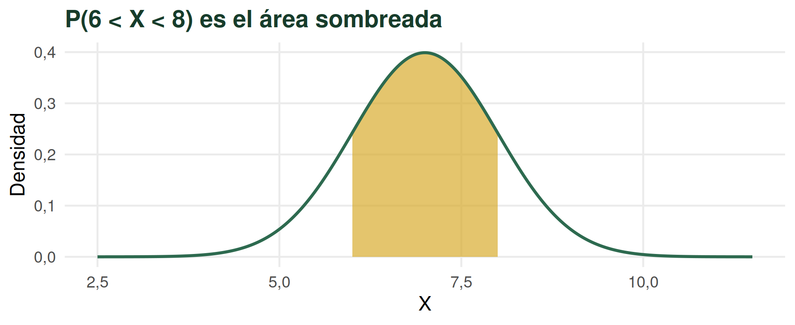
\(f(x)\ge0\)\(\displaystyle\int_{-\infty}^{+\infty}f(x)\,dx=1\)
La altura de la curva no es una probabilidad.
¿Qué ocurre alrededor de exactamente 7 t/ha?
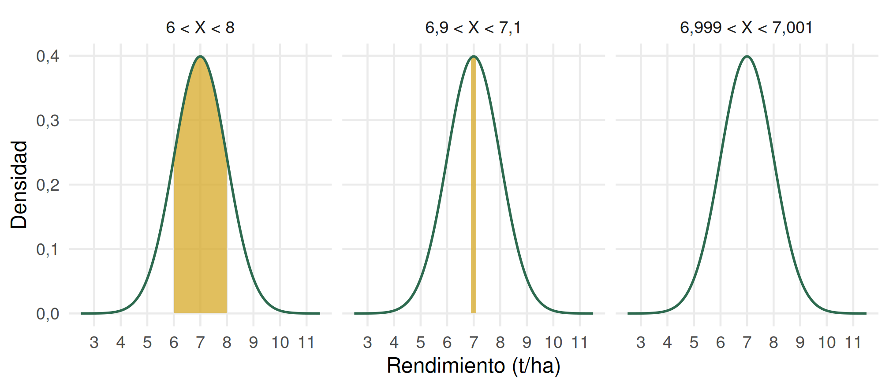
Un punto no encierra área
Al estrechar el intervalo, su ancho y su área tienden a cero.
\[P(X=7)=0\]
No significa que sea imposible registrar 7 t/ha. En un modelo continuo ideal, un valor puntual no encierra área.
\(<\) y \(\le\) vuelven a comportarse distinto
Discreta\[P(X<6)\neq P(X\le6)\]porque \(P(X=6)\) puede ser positiva.
Continua\[P(X<6)=P(X\le6)\]porque \(P(X=6)=0\).
La Normal es un modelo continuo central
Para el rendimiento de una parcela:
\[X\sim N(\mu,\sigma^2)\]
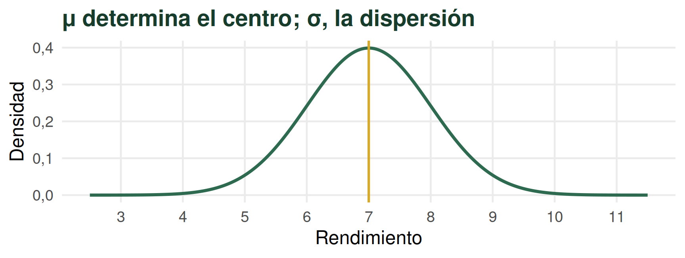
En \(N(\mu,\sigma^2)\), el segundo parámetro escrito es la varianza.
Una función matemática determina la curva
\[f(x)=\frac{1}{\sigma\sqrt{2\pi}}\exp\left[-\frac12\left(\frac{x-\mu}{\sigma}\right)^2\right]\]
No necesitamos memorizar esta fórmula.
\(P(a<X<b)=\displaystyle\int_a^b f(x)\,dx\).
No vamos a resolver estas integrales a mano.
La Normal es simétrica alrededor de \(\mu\)
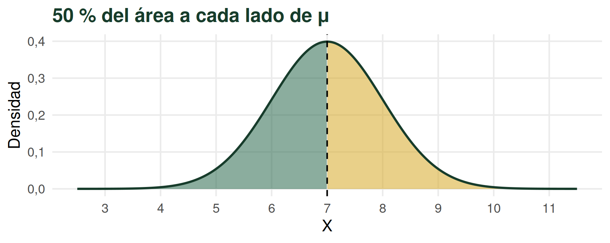
Media = mediana = moda.
\(\sigma\) mide la dispersión alrededor de la media
- valores posibles entre \(-\infty\) y \(+\infty\);
- área total igual a 1;
- \(\mu\) determina el centro;
- \(\sigma\) determina la dispersión.
Los puntos de inflexión se encuentran en:
\[\mu-\sigma,\qquad\mu+\sigma\]
Por eso podemos expresar distancias respecto de la media en unidades de \(\sigma\).
Regla 68–95–99,7
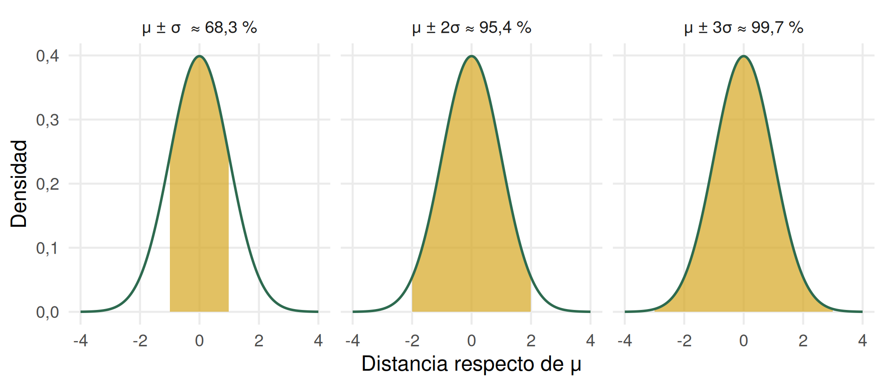
¿Cómo influyen \(\mu\) y \(\sigma\) en la forma de la distribución?
Cada parámetro modifica un aspecto diferente
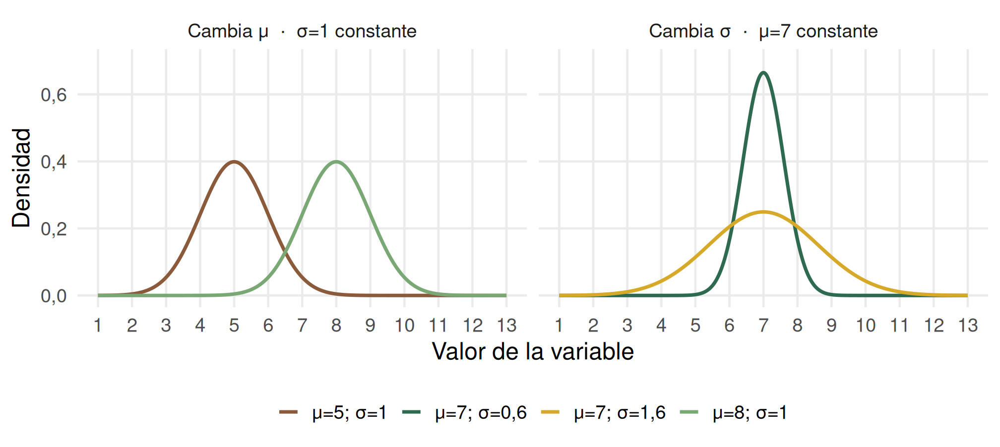
Una \(\sigma\) mayor distribuye la misma área total sobre un rango más amplio.
Otra forma de calcular probabilidades: estandarizar
Estandarizar transforma un valor de \(X\) en su distancia a la media expresada en unidades de desviación estándar.
\[Z=\frac{X-\mu}{\sigma}\]
\[Z\sim N(0,1)\]
\(z=1\)
una desviación estándar por encima de la media.
una desviación estándar por encima de la media.
\(z=-2\)
dos desviaciones estándar por debajo de la media.
dos desviaciones estándar por debajo de la media.
Estandarizar cambia la escala, no la posición relativa
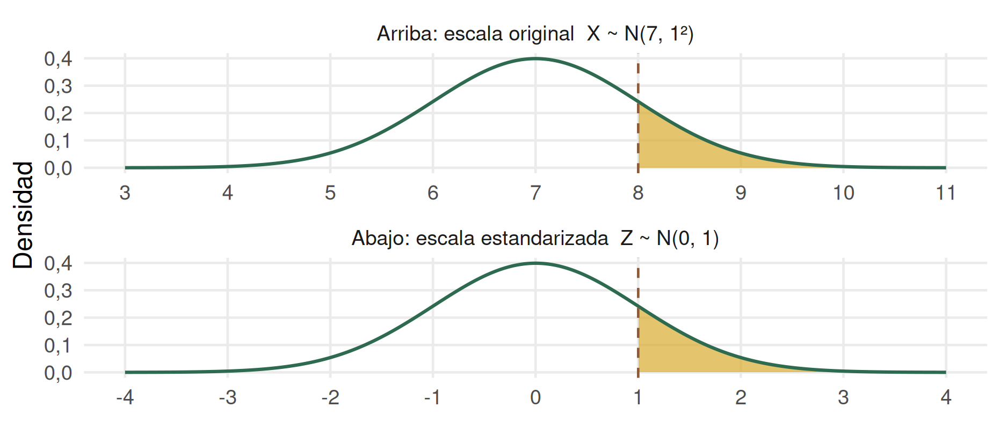
\(X=8 \Rightarrow Z=(8-7)/1=1\). El área a la derecha es la misma.
Una tabla alcanza para todas las Normales
Como cualquier Normal puede transformarse en \(N(0,1)\), una única tabla permite resolver probabilidades para toda la familia.
La tabla histórica de EyDE informa cola derecha para \(z\ge0\): \[P(Z\ge z)\]
Otras tablas usan otra convención. Siempre debemos leer el encabezado.
Leemos la tabla como una región
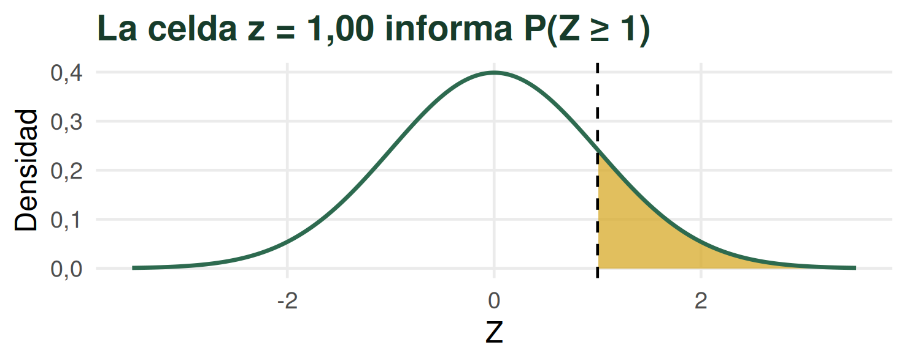
z0,000,010,020,03
1,00,15870,15630,15390,1515
Primero identificamos el área que buscamos
La altura de plantas de maíz de dos semanas se modela como \(X\sim N(12,1^2)\).
¿Cuál es la probabilidad de que una planta mida más de 13 cm?
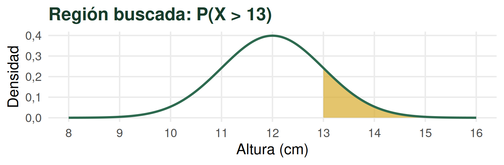
Estandarizamos, consultamos e interpretamos
\[Z=\frac{13-12}{1}=1\]
\[P(X>13)=P(Z>1)=0{,}1587\]
Si seleccionamos una planta al azar de esta población, la probabilidad de que mida más de 13 cm es aproximadamente 0,159.
En R:
pnorm(13, mean = 12, sd = 1, lower.tail = FALSE)
En la práctica usamos herramientas reproducibles
Binomial
dbinom(7, size = 10, prob = 0.70)pbinom(7, size = 10, prob = 0.70)Poisson
dpois(3, lambda = 4)ppois(3, lambda = 4)Normal
pnorm(6, mean = 7, sd = 1)d... da masa puntual en discretas, pero dnorm() da densidad, no \(P(X=x)\); p... da probabilidad acumulada.
Tabla, R e InfoStat calculan; el planteo sigue siendo nuestro
Tabla Z
Da sentido a la estandarización y puede usarse en parciales.
Da sentido a la estandarización y puede usarse en parciales.
R
Cálculo reproducible con funciones
Cálculo reproducible con funciones
d... y p....
InfoStat
Estadísticas → Probabilidades y cuantiles.
Estadísticas → Probabilidades y cuantiles.
Pregunta¿qué queremos saber?
→Modelodistribución y parámetros
→Regiónparte cuya probabilidad buscamos
→Cálculotabla, R o InfoStat
→Interpretaciónrespuesta en contexto
Una IA puede ayudar a plantear o interpretar; verificamos el resultado con una herramienta estadística reproducible.
Probabilidades con una Normal usando R
Supongamos que el rendimiento (t/ha) sigue esta distribución: \(X\sim N(7,1^2)\).
Si elijo una parcela al azar, ¿cuál es la probabilidad que tenga un rendimiento menor a 6 tn/ha? En probabilidades, P(X<6) = ?
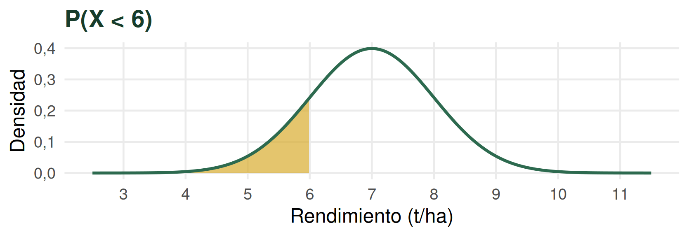
pnorm(6, mean = 7, sd = 1) = 0,159
\(P(6<X<8)\):
pnorm(8,7,1) - pnorm(6,7,1) = 0,683
La Normal no es la única distribución continua
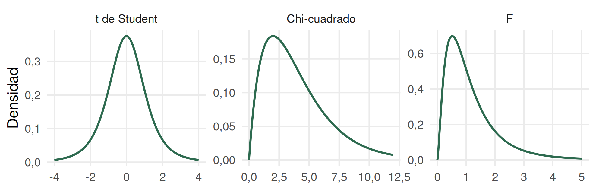
t de Student
simétrica, similar a Normal, con colas más pesadas; 1 parámetro: grados de libertad (n-1).
simétrica, similar a Normal, con colas más pesadas; 1 parámetro: grados de libertad (n-1).
Chi-cuadrado
positiva y asimétrica hacia la derecha; 1 parámetro: grados de libertad.
positiva y asimétrica hacia la derecha; 1 parámetro: grados de libertad.
F
positiva y asimétrica, con forma diferente; 2 parámetros: dos grados de libertad.
positiva y asimétrica, con forma diferente; 2 parámetros: dos grados de libertad.
Aparecerán más adelante cuando hagamos Inferencia Estadística.
Una distribución es un modelo
- no todo conteo es Binomial;
- no todo conteo es Poisson;
- un muestreo finito sin reposición puede llevar a una Hipergeométrica;
- no toda variable continua es Normal.
Elegimos una distribución porque representa razonablemente el proceso y cumple determinados supuestos, no porque “el gráfico se parece”.
¿Qué proceso modela cada distribución?
Bernoulli
Variable 0/1
p
Variable 0/1
p
Binomial
Éxitos en n ensayos independientes
n, p
Éxitos en n ensayos independientes
n, p
Poisson
Ocurrencias por unidad
λ
Ocurrencias por unidad
λ
Hipergeométrica
Éxitos en n ensayos no independientes (sin reposición)
N, K, n
Éxitos en n ensayos no independientes (sin reposición)
N, K, n
Normal
Variable continua
μ, σ
Variable continua
μ, σ
¿Cuál representa el proceso que generó nuestra variable?
En la realidad, los parámetros suelen ser desconocidos
Población
π μ σ
parámetros
π μ σ
parámetros
↓
tomamos una muestra
tomamos una muestra
Muestra
p̂ x̄ s
estadísticos
p̂ x̄ s
estadísticos
Usamos estadísticos muestrales para estimar parámetros poblacionales.
Para conocer exactamente un parámetro necesitaríamos observar toda la población relevante; con una muestra existe incertidumbre.
La próxima pregunta es sobre incertidumbre
¿Cuánta incertidumbre tenemos cuando usamos una muestra para aprender sobre una población?
Ese es el puente hacia la Inferencia Estadística.

Andrés Tálamo - Estadística y Diseño Experimental - UNSa